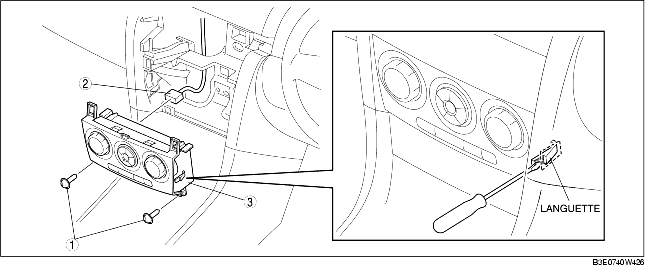

1. Débrancher le câble négatif de la batterie.
2. Déposer le panneau du cendrier. (voir la section DEPOSE/REPOSE DE CONSOLE.)
3. Déposer le panneau de décoration. (voir la section DÉPOSE/REPOSE DE PANNEAU DE DÉCORATION.)
4. Déposer le module de panneau central. (voir la section DEPOSE/REPOSE DE MODULE DE PANNEAU CENTRAL.)
5. Relâcher les languettes gauche et droite, et les déposer comme indiqué dans l'illustration.
